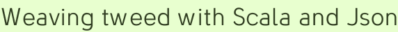

Weaving tweed with Scala and Json
Extractor objects, a secret feature of the Scala language described only in Chapter 24 of Programming in Scala, certainly hit it big time this spring. Everybody used to be contented with case Some(thing) => kerpow(thing), but now you are not even allowed inside the #scala freenode unless you can produce your own extractor. If you try to cheat, the cutthroat Scala channel regulars will hack into your computer to make it play the astonishingly stupid Dollhouse on repeat (but skipping the coed shower scenes) until, like the show’s “actives”, you abandon consistent typing entirely.
This extractor may pinch a little
Fleeing this terrible fate, Coderspiel has endeavored to apply extractor objects to any and all circumstances. E.g. Json objects, which are fancy strings that mean something to a JavaScript interpreter. With an extractor you can process them in case statements, like this:
import dispatch.json.Js
val echo = Js("""{"acting": "staring blankly ahead"}""")
object Echo extends Js { val acting = 'acting ? str }
echo match {
case Echo.acting(hmm) => hmm
case _ => "pshaw"
}
res0: String = staring blankly aheadAn extractor is created when you call ? on the 'acting Symbol, which doesn’t have a ? method but can be implicitly converted into an object that does. And since we know that Echo is always acting, we can use the extractor for direct assignment:
val Echo.acting(a) = echo
a: String = staring blankly aheadHa ha. So mean. Anyway, that is how you can leverage one of Scala’s odder features to extract Json data. A downside may be that extractors are expected to handle the entire input or nothing, so that the apply method reverses the extract’s unapply. Who knows if this is the case, the answer is probably in some PDF somewhere. But in code it is nice and compact to extract different things from the same object, so who cares.
Extractors are not the only way to skin the Json cat, however. Sometimes you just want to get at a field that you know the name and type of, without creating a reusable extractor. We have an answer! for that! too!
import Js._
('acting ! str)(echo)
res0: String = staring blankly aheadUnder the hood this baby is using a JsonParser written by Jorge Ortiz, because it seems to be awesome. The extraction interface resting on top of that is pretty happy with itself for the moment, but please refer to the ScalaTest specs at any time to see interaction examples that are known and intended to work.
140 characters can’t be wrong
Twitter is a fluttering, fragile messaging system with one ultimate purpsose: boosting Tim O’Reilly’s ego from the stratosphere into low earth orbit. And now that that’s been accomplished, Twitter will shortly be taken over by everyone you are trying to get away from on Facebook. But in this fleeting userland springtime, Twitter has some very charming HTTP interfaces that just waiting to be queried. Let us query…
First, here is what you need to follow along: simple-build-tool, an unflappable Scala builder. Its new version 0.4 has a sweet distributtion loader that downloads the builder itself and whatever version of Scala you want to compile against when you first run it. Just follow the setup instructions to get sbt on your path. Then checkout Databinder Dispatch:
git clone git://technically.us/git/dispatch
cd dispatch
sbt # download stuff, enter sbt console
update # Ivy, my dependencies please
console # activate SCARA console
import dispatch._
import Http._
Http("http://www.fox.com/dollhouse/" >>> System.out )
[the horror](“I pitched it as Alias meets Quantum Leap.” No. Sydney Bristow is kicking your face right now for even thinking that, Whedon.) Communicating over HTTP with Dispatch is easy and fun! But we’ve seen all that before, and even plugged it into CouchDB with Dispatch’s old hooptie Json interface. Take a gander at the fancy new upscale API:
import dispatch.json.Js._
val st = :/("search.twitter.com")
Http(st / "search.json?q=dollhouse%20gratuitous" ># {
'results ! list } ) map { 'text ! str }
res2: List[String] = List(More character development and less gratuitous [...] Sadly, the identifier $ is valid yet forbidden in Scala, so we had to change it to ># or face an attack from Switzerland. The following paragraph is left in respect for the $.
The magical $ transports you into Jsonwald, where you can assert any identifier and type that you want, and it’s yours! (Or maybe it just takes a function JsValue => T.) The dollar sign is a fun symbol for the operation, at least until the global super-inflationary cycle and/or collapse of the dollar kicks in.
Watch for falling restful API wrappers
Falling from the uh… clouds. (Sigh.) Some of them are piling up here. Step right up—we got your NYTimes, your CouchDB, your Twitter APIs! Or at least, we got a few of their calls mapped until we got bored, and moved on to another one! (If anyone likes this stuff and wants to expand it, please do fork and format-patch.) This is what our search for unintelligent life looks like using Dispatch’s Twitter interface:
import dispatch.twitter._
Http(Search("#dollhouse gratuitous").results) map Status.text
res4: List[String] = List(More character development and less gratuitous [...]Dope. But let’s try something more serious:
val User.followers_count(fc) = Http(User("timoreilly").show)
fc: BigDecimal = ERROR OUT OF HEAP SPACE PERSON IS TOO BELOVED!!!omg.
What to do with case classes if you aren’t making a calculator
One criticism of Scala, which is not really a criticism of the infallible god-language but of us its unworthy programmers, is that conventions are not yet established so everyone is using it is different ways, just like our parents experimented with different drugs in the 60s and 70s. It is kind of cool though, the whole creative thing: some people’s Scala draws heavily from the canon of functional languages, others gorge themselves on the cloying DSLs first popularized in dynamic languages (ahem). But if you are writing a general purpose programming interface in Scala, the overall aim is to do it in a way that will be maximally understandable, timeless, and most of all sexy. It is hereby asserted that the surest way to do that is to use language primitives to their fullest extent, so that if something looks chintzy you can just blame Odersky.
Thus Dispatch’s Json extraction occurs fundamentally in extractor objects that can implicitly convert to function objects. Even if the code that implements these operations is crappy (it has happened before!) it can usually be fixed without breaking application code relying on the basic hand-wavy structure.
As it happens, the way that HTML was stitched together in the CouchDB-to-web application Sling server at the time of its intro post was downright embarrassing. (Which is why none of that code was quoted.) It is great that you can put XML right into your Scala code but that alone isn’t going to save you from tangling tags. For that you need … template case classes?
trait Press { val html: Elem }
case class Page(content: Content) extends Press {
val html =
<html xmlns="http://www.w3.org/1999/xhtml">
<head>
<link rel="stylesheet" href="/css/blueprint/screen.css" type="text/css" media="screen, projection" />
<link rel="stylesheet" href="/css/blueprint/print.css" type="text/css" media="print" />
<link rel="stylesheet" href="style.css" type="text/css" media="screen, projection" />
{ content.head }
</head>
<body>
{ content.body }
</body>
</html>
}
trait Content { def head: NodeSeq; def body: Elem }Then you can define whatever concrete implementations of Content you need. Using case classes it is easy to pass in pieces of information that various levels of the template will act on, in one nested expression. Here are some to render Sling’s edit page
Page(EditDocument(TOC(couched, id, "?edit"),
EntityUtils.toString(entity, UTF8)
)).htmland display page
Page(ShowDocument(TOC(couched, id, ""), md, tweedy)).htmlThe value tweedy, in case you are wondering, is an Option[(String, List[JsValue])], potentially containing a search term for Twitter as well as the results, only containing values if the CouchDB Json object this app is slinging to the web contains a String named “tweed” (a tweet-feed). The matching tweets will appear below the body content: It’s an insta-forum, floating in the clouds, and all you have to do is name your raindrop! Here’s how it renders:
<h3>{ tweed } tweed</h3>
<ul class="tweed"> {
js map { js =>
val Search.text(text) = js
val Search.from_user(from) = js
val Search.created_at(time) = js
val Search.id(id) = js
val from_pg = "http://twitter.com/" + from
<li>
<a href={ from_pg }>{ from }</a>:
{ Unparsed(text) }
<div>
<em> { time.replace(" +0000", "") } </em>
<a href={ "http://twitter.com/home?" + Http ? Map(
"status" -> ("@" + from + " " + tweed + " "),
"in_reply_to_status_id" -> id, "in_reply_to" -> from
) }>Reply</a>
<a href={ from_pg + "/statuses/" + id }>View Tweet</a>
</div>
</li>
}
} </ul>
<p>
<a href={ "http://search.twitter.com/search?" + Http ? Map("q" -> tweed) }>
See all Twitter Search results for { tweed }
</a>
</p>Can you find the “loop” of tweets? It is the map. That is how you loop, when your templating language is NodeSeq. Which, incidentally, is not that conceptually different from a Wicket ListView. Both cases are a welcome, if initially mind-bending, departure from the for loops that so many template-scripting languages fall back on. We aren’t printing HTML in iterations, but projecting it from data structures. It’s predictable!
This is all just talk
No, it is madness at work. Just look at the Spde → Talk page, which repeats tweets tagged with #spde. That is sure to be easier to maintain than a forum or mailing list. If someone wants to spam there, it’s Twitter’s problem (sorry al3x).
A dude already did this for comments, entirely with client side code which is cool. This Sling implementation is obviously server side and, being fully ETagged, shouldn’t require anybody’s server to work unduly. The max age is set to ten minutes, so within that interval plain requests are served by Apache’s mod_cache_disk without hassling the Sling server. If anyone presses reload (requests with max-age=0) the cache will GET at Sling, which will query Twitter to see if there are any new results and hit CouchDB with an IfNoneMatch. A 304 Not Modified is returned if nothing has in fact been modified. This is all made possible by a composite ETag containing everything that’s needed to determine content freshness.
curl -I http://technically.us/spde/Talk
...
ETag: "2165687990|#spde|1340833486" The middle element acts as a bit of memory. They should try adding something like that, to Dollhouse.
Walking tour
- Talk about #spde — go ahead, litter the twitter.
- Setup simple-build-tool — Scala batteries included!
- Get / git Databinder Dispatch
- Play in the friggin’ clouds with Dispatch in a console.
- Refer to the specs if you get lost.
Codercomments
This little secret about extractor objects was hinted out in chapter 15 (Case classes and Pattern matching) and disclosed in chapter 24 (Extractors).
Oops. I have a thing for mixing up 4s and 7s, if you can believe that. I’ve changed the copy ‘24’, the chapter I meant to reference; thanks for the correction!
great post! good humor! keep it up – this helped me today
Add a comment